イスラーム史（ティムール以降と3帝国）
14世紀後半、中央アジアから台頭したティムールによってモンゴル帝国の再建が図られました。その後、16〜17世紀にかけて、西アジアから南アジアにかけてオスマン帝国、サファヴィー朝、ムガル帝国という3つの巨大なイスラーム帝国が並び立ち、それぞれの地域で独自の繁栄を極めました。
1. ティムール朝の興亡（14〜15世紀）
西チャガタイ＝ハン国の没落豪族であったティムールが、1370年にサマルカンドを都として建国しました。彼はチンギス・ハーンの家系の娘を妻に迎え、モンゴル帝国の再建を掲げました。
- 拡大と軍事活動：イラン（旧イル＝ハン国領）や南ロシア（キプチャク＝ハン国）、北インド（トゥグルク朝）へ侵入し大殺戮を行いました。さらに西進して、1402年のアンカラの戦いでオスマン帝国（バヤジット1世）を撃破し、一時滅亡の危機に追い込みました。（※この遠征中に歴史家イブン・ハルドゥーンとも面会しています）
- 最期：1405年、明（永楽帝）への遠征途上でティムールは病死しました。
- その後の展開：
- 第3代君主シャー・ルフ：都をアフガニスタンのヘラートに遷都しました。明の永楽帝と使節を交換するなど平和外交に努めました。
- 第4代君主ウルグ・ベク：サマルカンドに天文台を建設し、学芸を保護しました。
- 滅亡（1507年）：北方のトルコ系遊牧民であるウズベク人（シャイバーニー朝）によって滅ぼされました。
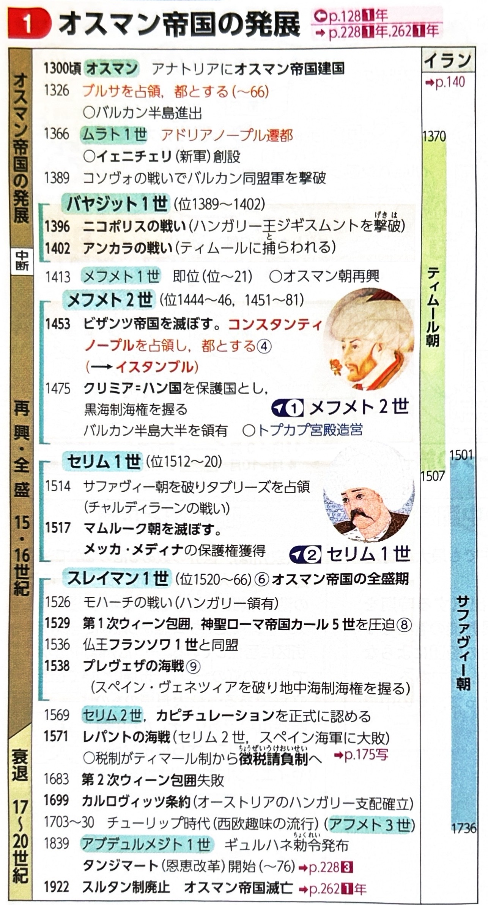
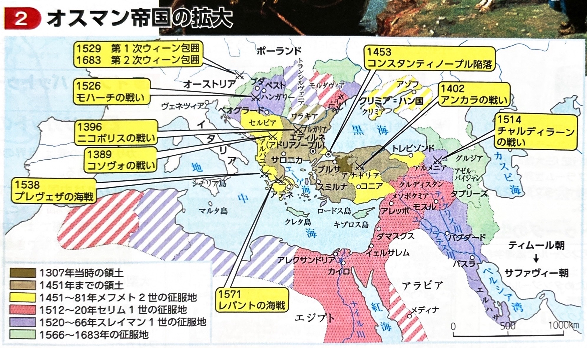
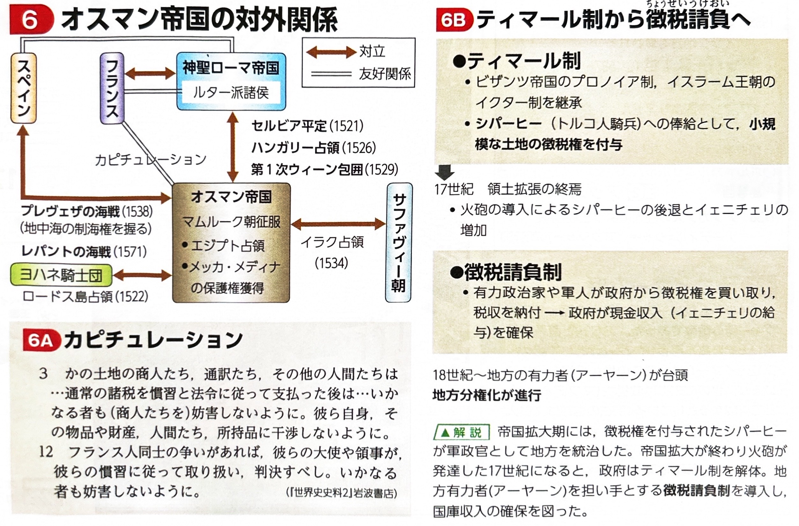
2. サファヴィー朝（イランのシーア派帝国）
16世紀初頭、イラン地方に神秘主義教団（サファヴィー教団）を母体とする新たな帝国が成立しました。
| 人物・出来事 | 特徴と政策 |
|---|---|
| イスマーイール1世 | 1501年、タブリーズを都として建国。「キジルバシュ（赤い頭）」と呼ばれるトルコ系遊牧民の軍事的支持を受けました。国家の統合を図るため、イスラーム教の十二イマーム派（シーア派）を国教としました。 |
| 第5代 アッバース1世 | 最盛期の王。16世紀末に都をイスファハーンに遷都しました。この街は「世界の半分」と称されるほど繁栄しました。また、イギリス（東インド会社）と協力して、ペルシア湾の要衝であるホルムズ島をポルトガルから奪回しました。 |
| 滅亡（1736年） | 18世紀に入るとアフガン人の侵入を受け、最終的に滅亡しました。 |
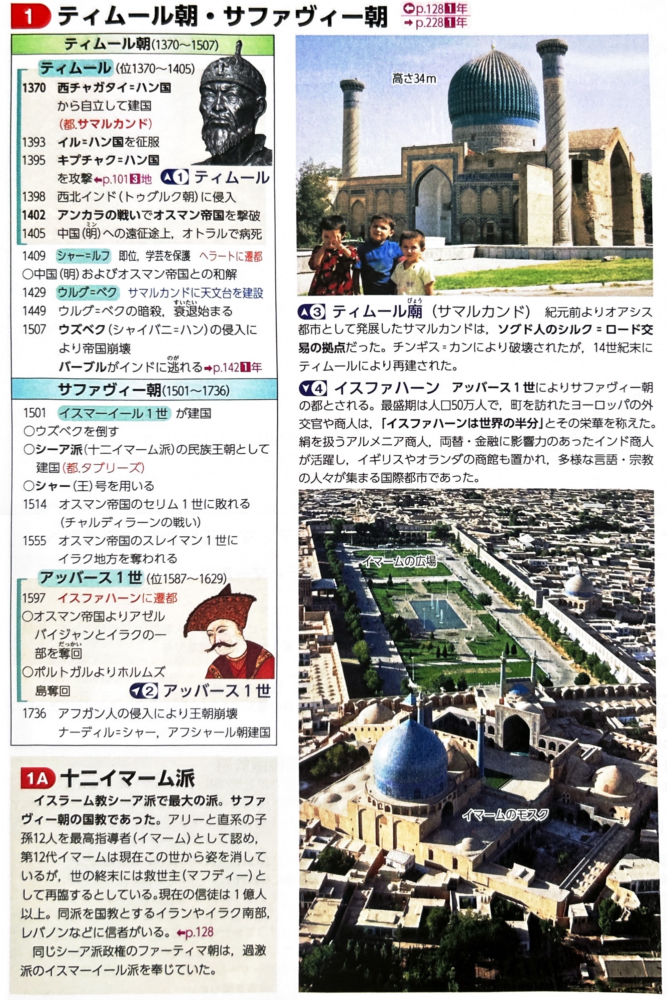
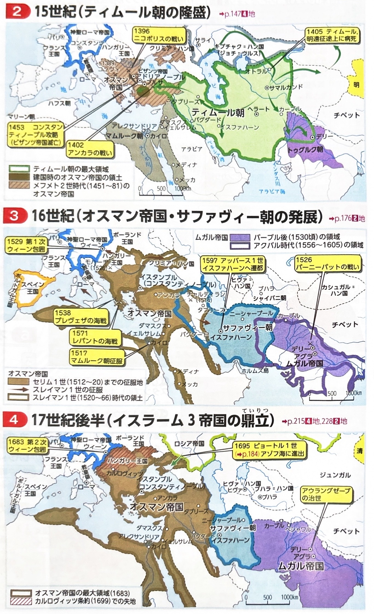
3. ムガル帝国（インドのイスラーム帝国）
ティムールの子孫を名乗るバーブルが、インドに侵入して建てた広大な帝国です。
1526年のパーニーパットの戦いで、デリー・スルタン朝最後のロディー朝を破り建国しました。
都をアグラに定め、北インドをほぼ統一しました。異教徒に対するジズヤ（人頭税）を廃止し、ヒンドゥー教徒のラージプート諸侯と婚姻関係を結ぶなど融和政策をとりました。また、官僚・軍事制度であるマンサブダール制を導入して中央集権化を図りました。
愛妃ムムターズ・マハルの墓廟として、巨大で美しいタージ・マハルをアグラに建立しました。（※莫大な建築費が財政を圧迫しました。）
南インドに遠征し、帝国の最大版図を実現しました。しかし、厳格なスンナ派であった彼はジズヤを復活させ、ヒンドゥー教寺院を破壊したため、マラーター王国（シヴァージー）やシク教徒の激しい反乱を招き、帝国の衰退が始まりました。
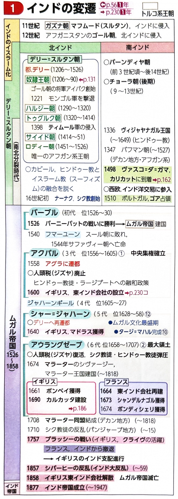
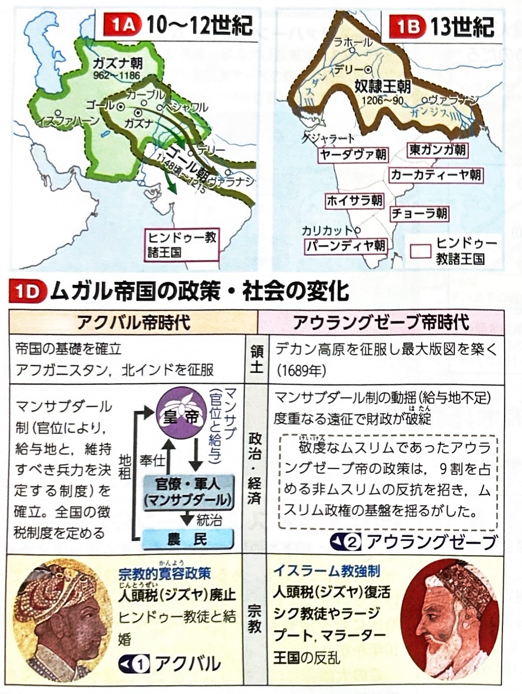
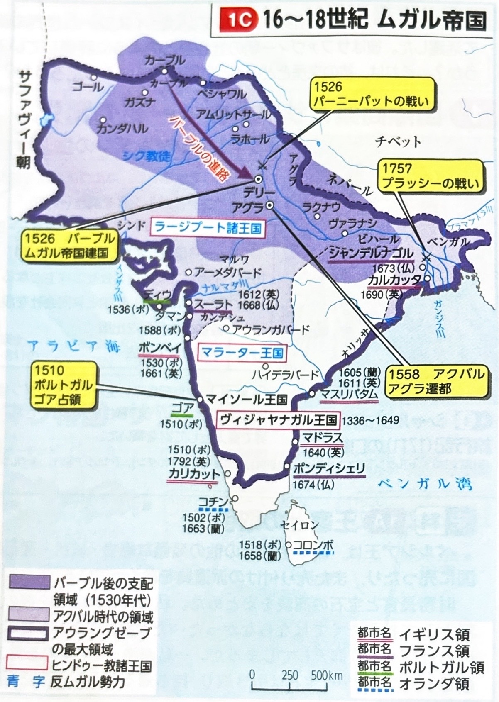
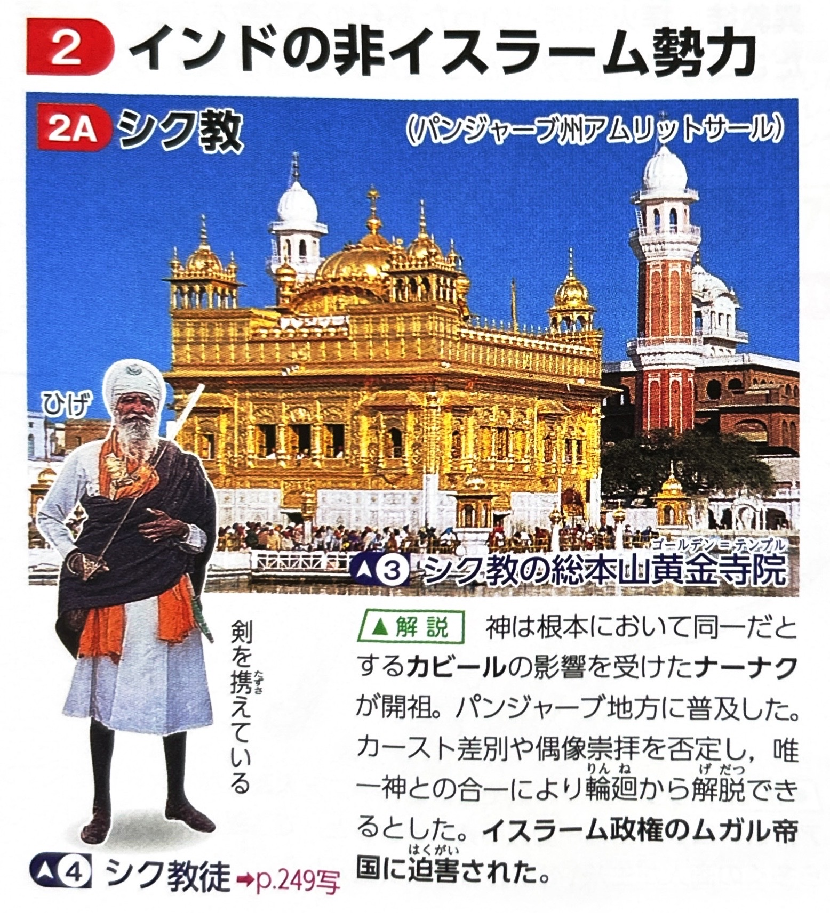
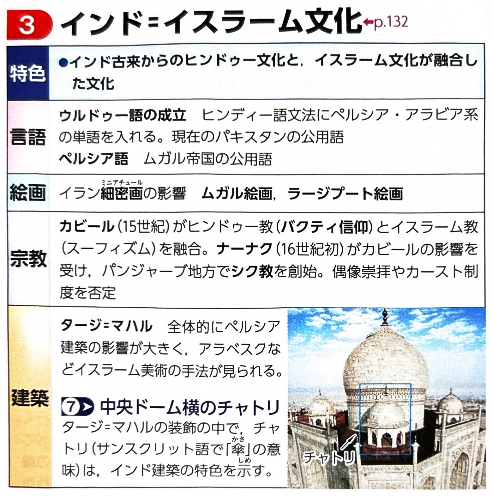
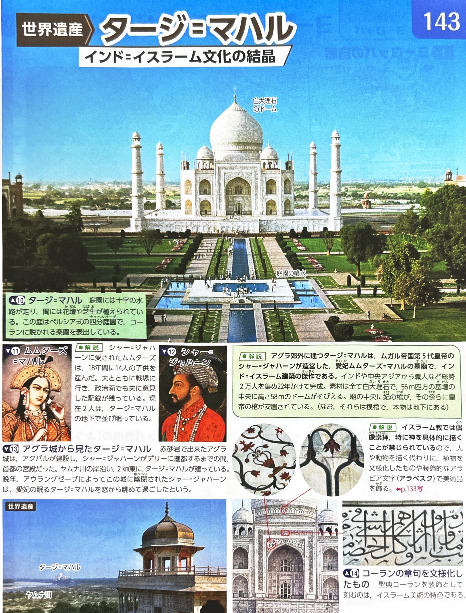
4. オスマン帝国の拡大と最盛期
13世紀末にアナトリア（小アジア）でオスマン1世が建国し、ビザンツ帝国を滅ぼして、アジア・アフリカ・ヨーロッパの3大陸にまたがる大帝国を築きました。
| 皇帝（スルタン） | 主な出来事・業績 |
|---|---|
| 第4代 バヤジット1世 | 1396年のニコポリスの戦いで、ハンガリー王ジギスムントが率いるヨーロッパ十字軍を撃破しました。しかし1402年のアンカラの戦いでティムール軍に大敗し、捕虜となって獄死しました。 |
| 第7代 メフメト2世 | 1453年、コンスタンティノープルを陥落させ、ビザンツ帝国を滅ぼしました。都をここへ移し、名前をイスタンブルと改めました。 |
| 第9代 セリム1世 | 1517年、エジプトのマムルーク朝を滅ぼし、メッカとメディナの二大聖地の保護権を獲得しました。（※これによりスルタン・カリフ制が確立したとされます） |
| 第10代 スレイマン1世 | 帝国の最盛期。 ・1526年、モハーチの戦いでハンガリーを征服。 ・1529年、神聖ローマ帝国の都に迫る第1回ウィーン包囲を実行。 ・1538年、プレヴェザの海戦でスペイン・ヴェネツィア連合艦隊を破り、地中海の制海権を掌握。 ・フランス（フランソワ1世）に対し、恩恵的特権であるカピチュレーション（領事裁判権や租税免除など）を与えました。 |